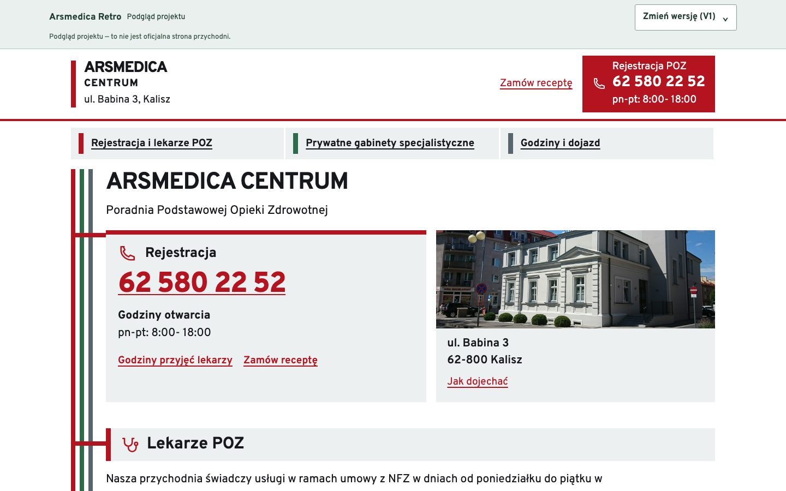
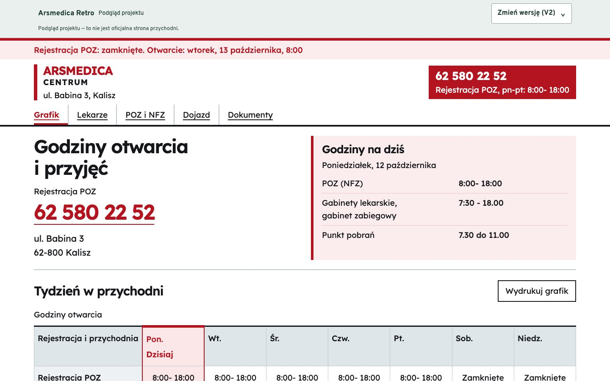
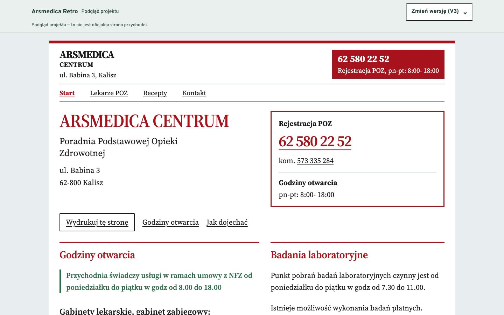
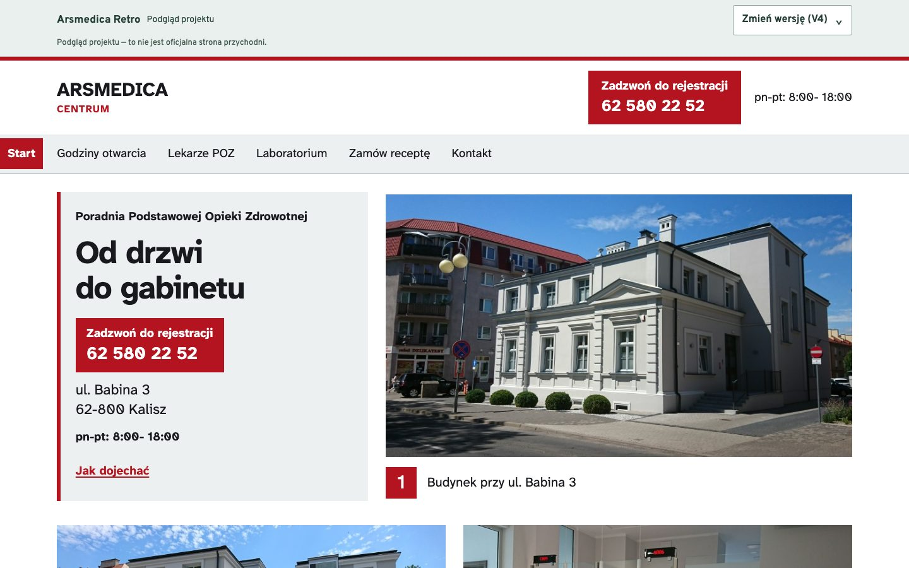
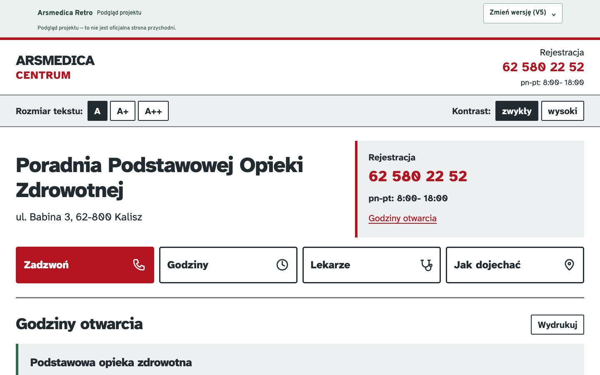

Arsmedica Retro
Pięć wersji strony przychodni do porównania.
Podgląd projektu. To nie jest oficjalna strona przychodni. Dane i dokumenty wymagają zatwierdzenia przed wdrożeniem.
Pytania do przychodni: kilka odpowiedzi potrzebnych przed uruchomieniem.

Wersja 1
Linie prowadzące
Kolorowe kierunki i przejrzysta rejestracja.
Otwórz wersję
Wersja 2
Grafik
Godziny otwarcia i przyjęć w centrum strony.
Otwórz wersję
Wersja 3
Ulotka
Układ informatora z wersją do wydruku.
Otwórz wersję
Wersja 4
Od drzwi do gabinetu
Przychodnia pokazana na jej własnych zdjęciach.
Otwórz wersję
Wersja 5
Duży druk
Większy tekst i regulacja kontrastu.
Otwórz wersję